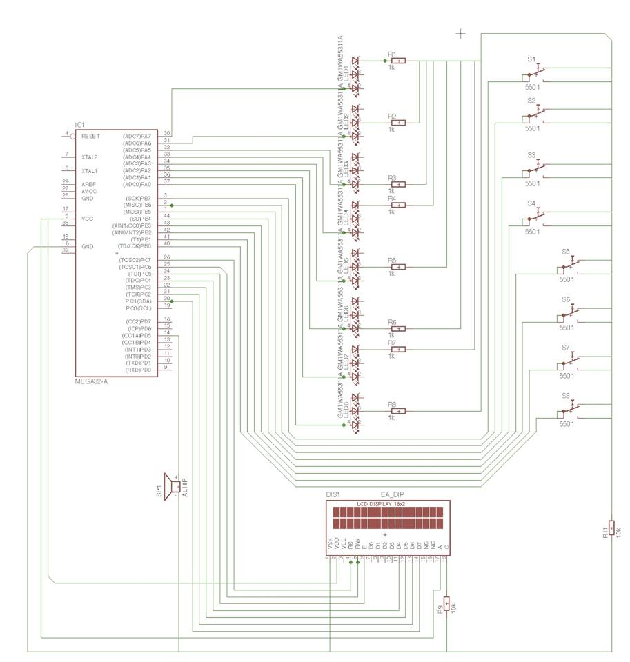

−Sidebar

{kind=link}
−Table of Contents
Mihai GROAPĂ (67013) - Memory Game pe Led-uri
Autorul poate fi contactat la adresa: Login pentru adresa
Introducere
Proiectul presupune implementarea jocului “Simon Says”. Scopul jocului este redarea intocmai a unor secvente de aprindere de led-uri, care devin din ce in ce mai lungi. Lungimea secventei este egala cu numarul rundei si la fiecare runda noua, jucatorul trebuie sa reproduca secventa de la nivelul anterior, la care se adauga o secventa noua, de lungime 1, specifica nivelului curent. Daca jucatorul reuseste sa refaca in totalitate secventa, trece la nivelul urmator, altfel jocul se opreste.
M-am gandit la acest joc deoarece este unul foarte popular si consider ca antreneaza atentia, capacitatea de concentrare si dezvolta memoria. Acest joc este util pentru cei care doresc sa se relaxeze si sa isi imbunatateasca memoria totodata, si de asemenea poate fi jucat impreuna cu alti jucatori, pentru a vedea cine este cel care reuseste sa refaca un pattern cat mai lung.
Pentru implementare o sa folosesc 8 led-uri, 8 butoane prin care pot fi aprinse, un difuzor prin care va fi redata gama DO major, fiecare nota fiind asociata aprinderii unui led. De asemenea buzzerul va reda o scurta melodie pentru incheierea jocului. Jocul va fi insotit si de un ecran LCD pe care vor fi afisate informatii privind starea: mesaj de incepere joc, afisare nivel curent si un mesaj la sfarsitul jocului.
Descriere generală
Schema bloc
{kind=link}
Hardware Design
Lista componente
- placa de baza + componente obligatorii
- 1 cablaj de test 120×170 mm
- 8 butoane 6x6x6
- 8 leduri RGB cu catod comun
- 1 buzzer Activ de 3 V
- 1 modul LCD 1602 cu backlight albastru de 5 V
- 8 rezistente de 1 kΩ pentru leduri
- 2 rezistente de 10 kΩ pentru butoane si LCD
- pini (foarte multi)
- 30 fire de legatura de tip mama-mama
TOTAL : ≈120 de lei (am cumparat multe lucruri pe care nu le-am mai folosit si de rezerva)
Schema electrica
schema_electrica.sch

{kind=link}
Software Design
Programe folosite
- Eagle 8.2.0 - circuitul electric
- Programer's Notepad
- WinAvr20100110 - compilare
- BootloadHID CLI - incarcarea codului pe placuta
Implementare
Jocul se poate desfasura pe parcursul a maximum 100 de nivele. Folosesc un vector in care salvez la fiecare runda noul buton de apasat. Dupa ce controler-ul termina de afisat secventa specifica nivelului, jucatorul poate incepe sa o introduca. Pe masura ce apasa butoanele, verific corectitudinea si in cazul unei greseli pornesc melodia de sfarsit de joc, aprind toate led-urile, blochez intrarile si afisez pe LCD un mesaj de felicitare urmat de nivelul atins. Daca secventa a fost introdusa corect, trec la nivelul urmator.
1. initializez seed-ul pentru functia random (din pacate nu se poate folosi time, motiv pentru care secventa va fi mereu acceasi :( );
2. setez pinii protului B ca intrari (pentru butoane), cei ai portului A, C si pinul D5 (buzzer-ul) ca iesiri;
3. initializez timer-ul pentru buzzer si pornesc LCD-ul;
4. timp de maxim 100 de runde fac urmatoarele:
5a. afisez pe LCD numarul rundei;
5b. aprind toate led-urile tip de o secunda la inceputul fiecarei runde;
5c. obtin indexul unui led nou, random, si il adaug la secventa actuala;
5d. aprind timp de 500ms fiecare led din secventa curenta;
5e. astept ca user-ul sa introduca secventa prin apasarea butoanelor;
5f. daca se greseste secventa, afisez mesajul de incheiere pe lcd, redau pe buzzer o melodie si alternez aprinderea-stingerea tuturor becurilor pana in moentul cand se va incepe un joc nou;
5g. in cazul in care s-a introdus o secventa corect, revin la pasul 5c.
Probleme intampinate
Principala problema a fost legata de faptul ca am uitat ca buzzer-ul trebuie legat la un pin PWM si am pierdut mult timp din cauza asta.
De asemenea nu am stiut ca pinii PD2 si PD3 sunt folositi pentru luminarea becurilor de pe placa de baza (legasem LCD acolo si nu puteam
folosi a doua linie).
Nu am reusit sa redau o melodie “buna” la sfarsit de joc, efectiv nu gasesc un exemplu in care sa am perechi de forma : frecventa_nota_muzicala, durata pentru o melodie cap-coada, am inventat eu una formata din 4 note dar suna rau → 0:59 video.
Rezultate Obţinute
{kind=link}
{kind=link}
{kind=link}
{kind=link}
{kind=link}
{kind=link}
Video cu functionalitatile proiectului: https://www.youtube.com/watch?v=uuFwxHM5hlw
Concluzii
A fost un proiect destul de simplu dpdv software, cu destul de mult lucru la nivel “hardware” (destul de mult de lipit). A fost o experienta placuta, o tema la care chiar am lucrat cu placere si fara presiune si pe viitor am de gand sa incerc si lucruri mai complicate cu micro-controlere (de data asta am vrut sa merg la sigur).
Download
Arhiva cu codul:
simonsaysgro.zip
Schema electrica:
schema_electrica.sch
Jurnal
21.04.17 - Creare pagina wiki
21.04.17 - Adaugare schema bloc
21.04.17 - Adăugare componente hardware
01.05.17 - Finalizare placa de baza
05.05.17 - Adaugare scheme electrice
18.05.17 - Finalizare lipire componente pe placa de test
23.05.17 - Finalizare implementare software
24.05.17 - Finalizare completare pagina de Wiki
Bibliografie/Resurse
Resurse Software
Eagle
https://www.autodesk.com/products/eagle/overview
AVR Atmel
http://www.atmel.com/tools/atmelstudio.aspx
WinAVR la pachet cu Programmer's Notepad
https://sourceforge.net/projects/winavr/files/
Schema placii de baza
http://cs.curs.pub.ro/wiki/pm/cablaj/proiect2017
Resurse Hardware
https://www.optimusdigital.ro
http://www.conexelectronic.ro
- Documentația în format PDF
prj2017/rbarbascu/gmihai.txt · Last modified: 2017/05/24 03:35 by mihai [dot] groapa [at] stud [dot] acs [dot] upb [dot] ro
Page Tools
Except where otherwise noted, content on this wiki is licensed under the following license: CC Attribution-Noncommercial-Share Alike 3.0 Unported